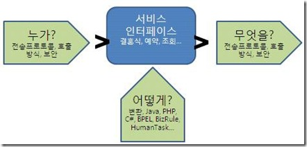
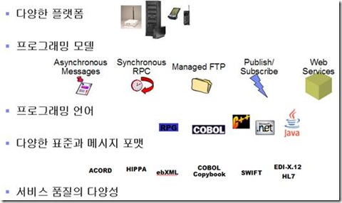
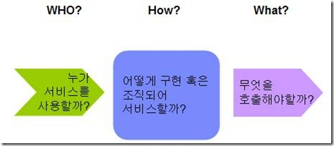
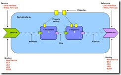
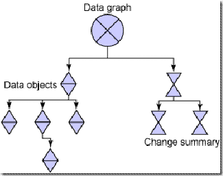
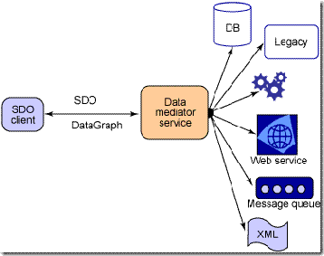
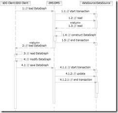
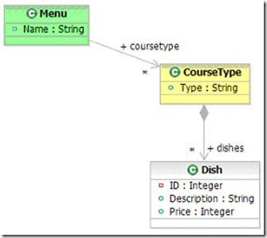
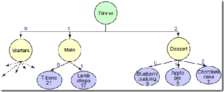

ESB는 그것이 지향하는 유연한 연결을 위해 그 어떤 물리적인 것과의 관계도 미리 확정하거나 단정짓지 않는다. ESB는 누군가 호출하기 전까지는 자기 안에 존재하는 서비스의 실체가 어떤 것인지를 알지 못한다. 그것이 바로 ESB가 유연함을 보장하는 방법이다. 그렇다면 ESB는 대체 어떻게 다양한 물리적인 것과의 관계를 유연한 관계로 연결시켰을까?

그림 17. ESB내의 서비스는 Who, What, How에 대하여 독립적이다
ESB는 실제 비즈니스 의미를 담고있는 것 이외의 모든 기술적인 것들의 결정을 모두 유보한다. 유보하는 요소는 크게 3가지로 나뉜다.
- 누가?: 예를 들어 ‘예약서비스’를 누가 어떤 방식으로 호출할 지에 대해 추상화시킨다. 어떤 사용자는 동기적인 방식으로 호출할 것이다. 어떤 이는 비동기적인 방식으로 호출할 수도 있을 것이다. 또 어떤 사용자는 MQ나 소켓등의 legacy스타일로 호출하기를 원할 수도 있다. 어떤 사용자에게는 보다 보안적용을 확실히 적용해야할 필요도 있을 것이다. 이것들은 실제 비즈니스 의미를 담고있는 서비스와는 별개의 부차적인 문제이다. 언제든지 바뀔 수 있는 부분이지만 이것들이 바뀐다고 비즈니스 의미를 해치는 것은 아니다. 따라서 ESB는 서비스의 누가?의 영역이 어떻게 바뀌더라도 서비스가 영향을 받는 일을 최소화하는 책임을 가진다.
- 어떻게?: 앞서 결혼식을 컨설팅하는 서비스는 다음과 같은 프로세스를 거쳤다. 1000만원 이상 잔고가 있을 경우에는 고급 예식장을 선택하고 그 이하일 경우에는 일반 예식장을 선택한다. 이러한 해당 서비스의 비즈니스 프로세스는 다양한 방식으로 실행될 수 있다. 가장 일반적이게는 BPEL로 구현할 수도 있겠지만 자바로도 능히 구현할 수 있을 것이고 PHP나 C#등의 다른 언어구현으로도 가능할 것이다. 기업환경은 너무나 유동적이기 때문에 하나의 문제를 한가지 방식으로만 해결하기를 영원히 바랄 수가 없다. 그때가 언제이든지 정의해 둔 서비스의 구현은 다양한 방식으로 교체가 자유롭게 가능해야만 한다. 그것이 유연함이다.
- 무엇을?: 하나의 서비스는 또 다른 서비스나 또 다른 IT자원을 필요로 한다. 앞서 결혼식 프로세스에서도 ‘잔고 조회’서비스는 실제 물리적인 데이타베이스를 필요로 할 것이며 ‘고급 예식장’ 서비스는 실제 A 혹은 B예식장 서비스를 필요로한다. 즉, ESB는 해당 비즈니스 서비스가 실제로 참조하고 있는 외부 서비스 자원에 대해서도 독립적이어야만 한다. 만약 결혼식 프로세스가 ‘고급 예식장’을 B예식장이라고 미리 단정지어버린다면 나중에 B예식장이 더이상 고급 예식장이 아니었을 때 이러한 현실과의 괴리를 해결하기 위해 결혼식 프로세스 자체가 변경되어야만 하는 과도한 노력을 수행해야한다. 따라서 ESB는 ESB내의 서비스가 참조하는 대상에 대해서 느슨한 연결을 제공해야만 한다.
이렇게 3가지 요소에 대한 느슨한 연결 제공을 통해 ESB내의 모든 서비스는 느슨한 연결을 보장받을 수 있고 궁극에는 SOA전체가 유연한 연결을 지향할 수 있는 발판이 만들어지는 것이다. 결국 ESB는 Java EE 컨테이너가 Java Component의 lifecycle과 트랜잭션이나 보안등을 관리하듯이 ESB는 서비스 컴포넌트의 lifecycle과 그 외 서비스가 정말 비즈니스 의미만 담을 수 있도록 그 외의 것들을 관리해주는 컨테이너임을 알 수 있다. 그렇다. 결국 ESB는 서비스 컴포넌트의 컨테이너이다. 그런 의미에서 ESB에서는 서비스 컴포넌트라는 개념이 대두되었다.
서비스 컴포넌트, 서비스의 가장 작은 단위
IT분야 전공자로서 컴포넌트라는 말을 들어보지 못한 사람은 아마 없을 것이다. 좀 더 정확하게 말하자면 단순히 컴포넌트가 아니라 소프트웨어 컴포넌트가 맞을 것이다. 그런데 이번 장에서 주로 다루는 주제는 소프트웨어 컴포넌트가 아닌 서비스 컴포넌트 그리고 이 서비스 컴포넌트의 아키텍처이다. 따라서 과연 우리가 일반적으로 알고 있는 소프트웨어 컴포넌트와 서비스 컴포넌트의 차이점은 무엇인지에 대해 짚고 넘어가는 게 좋을 것 같다.
컴포넌트란?
먼저 컴포넌트의 기본 정의부터 짚어보자. 컴포넌트란 '기능별로 정리되어 있는 비교적 컴팩트하며 재사용 가능한 부품'이다. 정리하자면
- 기능별로 정리되어 있다.
- 비교적 컴팩트 하다.
- 재사용 가능하다.
- 어떤 더 큰 무언가를 위한 부품이다.
바로 우리는 레고를 떠올릴 수 밖에 없고 컴포넌트의 기본 개념도 레고와 다를 게 없다. 그렇다면 소프트웨어 컴포넌트는 위의 요소를 다 가지고 있으면서 마지막 특징인 '어떤 더 큰 무언가를 위한 부품'만 변경하면 된다. 소프트웨어 컴포넌트는 '소프트웨어를 만들기 위한 부품'이다. 아주 간단한 정의 그리고 이해가 쏙쏙 되는 정의가 아닐 수 없다.
소프트웨어 업계에 객체지향의 개념이 시대를 풍미하던 때, 이 객체지향만 가지고는 소프트웨어의 재사용성을 보장할 수 없었기 때문에 컴포넌트라는 개념이 CBD(Component Based Development)와 함께 소프트웨어 개발업계의 주류로 자리잡게 되었다.
이 소프트웨어의 컴포넌트는 결국 소프트웨어 내부에서 쓰이기 위한 용도로 만들어졌기 때문에 상당히 컴퓨터 환경에 종속적이다. 이를테면 각각의 컴포넌트는 주로 사용되어야 할 OS가 있고 네트워크 연결 방식이 있고 프로토콜 방식이 있고 프로그래밍 언어 방식이 있다. 또한 인터페이스 기술 방식도 정해져 있어야만 한다. 소프트웨어는 각 컴포넌트가 가지고 있는 핵심 기능 이외에 여러 가지 것들을 고려해서 그것들을 사용해야만 한다. 그리고 고려해야하는 그 여러가지 것들은 핵심 기능 이외의 것들이다. 그래서 소프트웨어가 이러한 컴포넌트를 보다 편하게 사용하기 위해 컨테이너라는 것을 만들었다. 말 그대로 여러 이질적이거나 서로 다른 요구사항을 가진 컴포넌트들을 컨테이너에 얹고 공통된 방식으로 엮어내어 소프트웨어를 만들어내는 방식이다. 최대한 소프트웨어를 개발하는 개발자가 컴포넌트의 편리함을 취하고 불편함을 덜어내어 사용하고자 컨테이너를 만들었으나 소프트웨어 컴포넌트 자체가 가진 이러한 컴퓨터틱한, IT틱한 냄새는 지우기 힘들다.
서비스 컴포넌트
그렇다면 서비스 컴포넌트는 무엇일까? 이전에 언급한 컴포넌트의 정의에 서비스만 얹으면 된다. 즉 서비스 컴포넌트란 '기능별로 정리되어 있는 비교적 컴팩트하며 재사용 가능한 서비스의 부품'이라고 할 수 있다. 가장 최소한의 서비스 덩어리 부품이라고 보면 된다.
서비스 컴포넌트는 어떤 필요에 의해서 나왔을까? 그것은 바로 소프트웨어 컴포넌트가 해결하지 못한 상호운영성과 비즈니스 추상화 문제 때문이다. 서비스라는 것은 상당히 비즈니스적인 용어이다. 서비스는 결국 행위적인 의미가 강한데 이를테면 편지를 쓴다, 전화를 한다, 돈을 인출한다, 출퇴근을 한다 등등의 것들이 서비스계에서 통할 수 있는 언어이다. 그런데 소프트웨어 컴포넌트의 세계에서 서비스를 이야기하면 서로 언어가 통할 수가 없다.

그림 18.소프트웨어를 이루고 있는 다양한 요소들
위의 그림에서 보는 바와 같이 서비스를 이야기하기에는 소프트웨어 컴포넌트의 세계는 너무 불필요한 것들이 많다. 서비스 컴포넌트는 위 그림에서 언급된 모든 것을 죄다 추상화 레벨로 끌어올렸다. 곰곰히 생각해보면 위의 것들은 '느슨한 연결'의 개념을 이용하면 몇가지 것들로 상당히 간단하게 추상화될 수 있는 부분인 것이다. 즉, 서비스를 사용하려는 측과 서비스를 실제로 제공하는 측 그리고 서비스가 어떻게 구성되는 지를 최대한 느슨하게 연결시켜버리면 위의 복잡한 종속성에서 해방될 수 있다.

그림 19.서비스 컴포넌트의 추상화 대상
앞서도 설명했지만 위의 그림에서 보는 바와 같이 서비스 컴포넌트는 기본적으로 누가 서비스를 사용할 지 어떻게 사용할 지에 대해 추상화시켜버렸다. 또한 그 서비스가 어떻게 구현될런지 조차도 추상화시켜버렸다. 그래서 자바로 구현되었건 C, PHP, 코볼 어떤 것으로 구현되었다해도 상관없게 해버렸다. 게다가 이 서비스 컴포넌트가 로직을 수행 중에 또 다시 어떤 다른 서비스나 컴포넌트등을 호출한다해도 그것의 인터페이스만 알고 있을 뿐 그것이 웹서비스인지 RMI인지 TCP/IP인지 모르게 추상화시켜버렸다. 아니 대체 프로토콜도 모르고 어떻게 구현되었는지도 모르고 아무것도 모르면 대체 서비스 컴포넌트에는 무엇이 남느냐고? 차, 포 다 떼고 대체 서비스 컴포넌트에 무엇이 남았는지 살펴보자.
그림 20. 서비스 컴포넌트의 요소
위의 그림은 차, 포 다 떼고 껍데기만 남은 서비스 컴포넌트의 모습이다.
먼저 컴포넌트(Component)의 구현(Implementation) 영역부터 보자. 이것이 서비스 컴포넌트의 주요 몸체이다. 몸체는 몸체인데 안이 텅 비어있는 몸체이다. 이 몸체 안에는 자바로 만든 POJO형식의 클래스가 들어올 수도 있고 BPEL형식의 프로세스 정의만 들어올 수도 있고 PHP형식의 스크립트 언어가 들어올 수도 있다. 그것이 어떤 형태의 구현이든 이 컴포넌트 안에는 어떤 것이든 들어올 수 있게 정의해놓았다. 때문에 인터페이스만 동일하다면 C로 실행시키던 구현부를 다른 것은 다 냅두고 JAVA나 PHP등의 구현으로 변경해서 동일한 것인양 실행시킬 수 있다. 이 서비스 컴포넌트를 실행하는 요청자는 서비스가 바뀌었는지 조차 알 지 못한다.
그 다음에 참조(references)를 보자. 이 참조는 프로그래밍을 할 때 클래스 객체와 비슷한 것으로서 이 컴포넌트가 외부적으로 참조해서 사용하게 될 또 다른 서비스, 컴포넌트의 선언이라고 할 수 있다. 그런데 이 참조 역시도 느슨한 연결 방식을 채택하고 있다. 원격의 참조 대상의 인터페이스만 정의되어 있을 뿐 구체적인 정보는 최대한 느슨하게 정의하였다. 때문에 Implementation과 마찬가지로 얼마든지 변경이 가능한 구조이다.
마지막으로 서비스(services)를 보자. 외부에서 이 컴포넌트가 어떻게 호출되는지 어떤 프로토콜 등을 사용하는 지에 대해서도 추상화시켰다. 인터페이스만 정의되어 있을 뿐 그 실체는 최대한 느슨한 연결을 사용한다.
이처럼 서비스 컴포넌트의 특징은 구현에서 완벽하게 인터페이스를 분리하여 인터페이스로만 바라볼 수 있게 하는 것이 가장 큰 특징이라고 할 수 있겠다. 그렇다면 이 서비스 컴포넌트는 어디에 유용하게 쓰일 수 있을까? 과연 이 서비스 컴포넌트는 개발 환경에 어떠한 영향을 끼칠 것인가?
서비스 컴포넌트를 구현하는 사람은 이제 개발자라 부르기가 민망해질 것이다. 그들은 직접 소스코드를 건드리지 않는다. 그들은 단지 메시지와 인터페이스 그 외 몇가지 속성만을 가지고 서비스를 조합해낼 것이다. 그들이 그림그리듯이 만들어낸 서비스 컴포넌트의 조합들은 개발자에게 넘겨져 개발되거나 기존에 있던 서비스를 재사용하여 서비스 환경에 맞는 런타임 환경에서 실행될 것이다.
앞서도 누누히 강조하지만 SOA가 제대로 정착되기 위해서는 모든 것을 재사용하려 하고 서비스로 바라보는 문화가 정착되어야 한다. 그러기 위한 새로운 개발단위와 환경이 요구되는 것은 당연지사. 이제 서비스 컴포넌트의 표준, 서비스 컴포넌트의 아키텍처, 새로운 SOA시대의 IT 아키텍처의 기본단위가 될 SCA (Service Component Architecture) 에 대해 알아보자.
Service Component Architecture 줄여서 SCA는 ESB가 지향하는 세가지 요소에 대한 느슨한 연결을 지원하기 위해 고안된 SOA에서의 표준이다(혹은 표준으로 정착되어가고 있는 스펙이다). 앞서 설명한 서비스 컴포넌트의 개념을 수용하면서 이러한 서비스의 컴포넌트를 엮어서 자유롭게 비즈니스 애플리케이션을 만들 수 있는 아키텍처를 목적으로 한다.
SCA를 이루는 가장 작은 단위는 서비스 컴포넌트이다. 이 컴포넌트 안에는 구현(Implement)을 포함하고 있으며 이 구현은 외부 컴포넌트나 외부 사용자에게 서비스로 제공된다. 이 구현은 또 어떤 작업을 실제로 수행하기 위해서는 외부 컴포넌트나 외부 서비스를 필요로 할 것이다. 이것을 참조(reference)라고 한다. 이 컴포넌트는 내부적으로 실행에 영향을 줄 수 있는 속성(properties)이 있으며 구현은 외부 컴포넌트와의 참조를 통해 제공되는 서비스와의 조합과 내부 속성을 가지며 이를 통해 구성된 형태가 완전한 서비스 컴포넌트를 이룬다. (그림 19참조)
SCA에서 이 구현은 어떠한 것도 정의 가능하다. 전통적으로 쓰이는 자바나 C, C++뿐만 아니라 PHP, C#, 자바스크립트, BPEL, Xquery등 어떠한 것이든 SCA의 컴포넌트의 구현이 될 수 있다. SCA는 이 구현이 실제로 내부적으로 어떻게 실행되든 상관없이 앞서 정의한 참조와 속성, 서비스등만을 정의해준다면 아무런 제약을 두지 않는다.
이렇게 해서 만들어지는 서비스 컴포넌트들의 묶음을 모듈(Composite 혹은 Module)이라고 한다. 이 모듈안에는 컴포넌트와 서비스, 참조, 속성들이 선언되어있고 이에 더하여 다수의 컴포넌트들간의 연결(wire)을 포함하여 런타임에서 어떻게 메시지가 흘러가는 지를 선언하고 있다. SCA는 이러한 모듈들을 XML로 정의하고 있으며 SCA 런타임엔진은 이 XML파일을 바탕으로 서비스 컴포넌트의 특징을 읽어서 런타임에 반영하고 속성을 변경하면 동적으로 이러한 것이 엔진에 반영될 수 있다. 그림 21에서 보는 바와 같이 컴포넌트들은 하나의 모듈 내에서 다양한 로직과 바인딩 설정에 의해 서로 연관되며 이러한 모듈마저도 또 다른 모듈에 의해 사용될 수 있을 것이다.

그림 21.SCA모듈(Composite) 다이어그램
이렇게 관계맺어진 컴포넌트들은 하나의 서비스 모듈에 패키징이 되며 마치 자바 EE 환경에서 EAR 파일 내에 웹 애플리케이션과 EJB 애플리케이션 등을 패키징하듯 서비스 모듈을 통해 우리가 관계 맺어놓은 각각의 컴포넌트들을 표준화된 방식 즉 ZIP형태의 압축파일로 패키징할 수 있다. 이렇게 패키지화된 ZIP파일은 어떠한 SCA엔진에서도 읽혀질 수 있도록 표준화된 형식의 구조를 SCA표준에서는 정의하고 있다. 사실 서비스 모듈은 EAR과 크게 다르지 않다. 실제로 서비스 모듈 내에는 WAR파일이나 혹은 EAR파일도 패키징되어 포함될 수 있으며 JSP파일이나 그 외에 거의 모든 IT자원들의 컴포넌트들이 포함될 수가 있다.
SCA는 기업 내의 모든 비즈니스 로직들에 대한 추상화를 제공함으로써 그것이 자바로 만들어졌건 웹서비스이건 C로 만들어졌건 비즈니스 프로세스 이건간에 상관없이 동일한 서비스의 관점에서 엮을 수 있는 새로운 관점에서 프로그래밍 모델이다. 그런데 여기서 우리가 간과하고 있는 것이 있다. 데이타는 어떻게 할 것인가? 즉, SCA를 통해서 가시화된 컴포넌트들 간의 데이터 교환은 또 다른 추상화된 데이터 레이어를 필요로 함을 눈치채야한다. 각 서비스 컴포넌트들은 상대 컴포넌트가 내부적으로 어떠한 형태의 데이터 포맷을 필요로 하는지를 상관하지 않아야 하며 오로지 순수하게 모든 데이터를 데이터 자체로만 인식할 수 있는 표준이 필요함을 알 수 있다. 이를 해결해 줄 수 있는 것이 바로 SDO (Service Data Object)이다.
SDO(Service Data Object)는 IBM과 BEA가 공동으로 참여한 JSR 235 표준으로서 그 뿌리는 CommonJ라 는 구현물에 있다. SDO는 IT업계에서 점차 그 중요함이 절실해지고 있는 서로 다른 데이터 소스에 대한 통합되고 단순화된 제어를 목적으로 만들어진 API이다. 데이터소스가 DB이건 웹서비스이건 LDAP이건 상관없이 단일화된 인터페이스를 통해서 개발 생산성을 높이자는 데 그 목적이 있다.
SOA는 유연성과 상호운영성을 바탕으로 하는 강력한 산업 표준 프레임워크이며 온디맨드 비즈니스의 모든 것이라 할 수 있다. 이미 많은 인프라스트럭쳐가 SOA 애플리케이션을 구현할 수 있도록 웹서비스 표준에 맞게 많은 서비스들이 개발되고 있으며 자바는 다양한 API와 기술을 바탕으로 웹서비스를 찾고 생산하고 사용할 수 있는 능력을 보유하고 있다.
그러나 문제는 애플리케이션에서 정보를 가져오는 표준화된 방법이 없다는 점이다. 물론 JAXB나 Castor, XMLBeans 혹은 다양한 바인딩 기술을 통하여 XML 혹은 여러 다른 형태의 데이터를 자바 객체로 불러들여 사용하는 것이 가능하지만 과연 이러한 다양한 기술과 프레임워크를 단일 애플리케이션 혹은 프로젝트에서 적용하길 원하는가?
이러한 점에서 SDO가 도움을 줄 수 있다. SDO는 모든 데이터에 대하여 표준화된 구조와 객체 형태를 제공한다. 더우기 수많은 데이터 소스와 서비스로 부터 표준화된 접근 방식을 제공한다. 이는 정보의 소스로부터 비즈니스 프로세스를 분리하여 데이터 중심적인 제어를 가능하게 한다.
SDO의 목적
SDO가 만들어지게 된 가장 주된 목적은 보다 단순한 데이터 제어에 있다. 즉, EIS (Enterprise Information Systems)의 다양한 데이터 제어 기술을 통합하자는 데 그 첫번째 목적이 있는 것이다. 따라서 SDO를 사용하게 되면 데이터 소스로부터 독립적인 데이터 표현 인터페이스를 구축할 수 있게 된다. 이러한 SDO의 설계 이면에는 Domain Store라 불리우는 J2EE 패턴이 자리잡고 있다. 이 패턴을 통해 SDO는 데이터 제어를 보다 쉽게 하고 서로 다른 계층간에 느슨한 연결을 보장하는 등의 여러 이점을 제공하고 있다. 특히 느슨한 연결이라는 특징은 SDO의 가장 눈여겨볼 만한 장점 중의 하나라고 볼 수 있다.
SDO의 구조
크게 보면 SDO는 데이터 객체(Data Object), 데이터 그래프(Data Graph) 그리고 DMS(Data Mediator Service)로 이루어져 있다.
데이터 객체와 데이터 객체 그래프
데이터 객체는 데이터를 담고 있는 컴포넌트이다. 이는 내부적으로 키/값 쌍으로 이루어져있다. 각각의 값들은 원시 데이터 이거나 혹은 또 다른 데이터 객체일 수 있으며 Serializable 객체이다. 즉 데이터 객체는 모든 데이터의 기본 데이타이며 이러한 데이터 객체가 모여서 이루는 계층적인 구조가 바로 데이터 그래프라고 할 수 있다.
레스토랑의 디저트에 관련된 정보를 표현할 필요가 있을 때 데이터 객체는 다음과 같은 값을 가질 수 있다.
<ID, 123>
<Description, "Chocolate Cake">
<Price, 7>
JDBC의 java.sql.ResultSet 인터페이스의 개념처럼 SDO의 동적 API 모드에서도 이러한 값들을 그것들의 이름이나 인덱스를 통해 접근할 수 있다.
// 그래프의 첫번째 요소를 가져온다.
DataObject dessert = (DataObject) graph.get(0);
// 디저트 이름과 그 가격을 가져온다.
String dessertName = dessert.getString("Description");
int dessertPrice = dessert.getInt("Price");
데이터 객체 그래프
데이터 객체 그래프는 데이터의 계층적인 구조를 표현한다. 이는 데이터 객체의 트리를 담고 있으며 Change Summary라고 하는 그래프 상의 모든 데이터 객체들의 변화된 정보를 담고 있다. Change Summary가 필요한 이유는 SDO가 기본적으로 데이터소스와 비연결의 특성을 가지고 있기 때문이다.

그림 22 데이타 객체 그래프의 예
DMS
앞서 언급한 것처럼 SDO는 기본적으로 데이터소스와 비연결의 특성을 지니고 있다. 따라서 한번 데이터 소스와 연결이 되면 DMS는 실제 데이터 소스와의 연결을 해제한다. 이러한 비연결성은 n-tier 웹 기반의 아키텍처에 매우 적합하다.
DMS는 데이터 소스로부터 데이터 그래프를 만들어내는 메소드를 제공하는 컴포넌트이다. 이는 데이터 소스에 변화를 기록한다. 다양한 데이터 소스 포맷(XML, JMS, JCA, JDBC 등등)에 따라 다수의 DMS가 존재할 수 있다. DMS는 실제 데이터 저장소의 특징적인 부분을 감추고 SDO와 EIS간에 추상적인 인터페이스를 두어 언제나 같은 포맷(데이터 그래프)의 정보를 반환하게 된다. 사실 이 DMS는 SDO 표준의 영역에 있지는 않지만 이 구현은 여러 다양한 데이터 소스에 따라서 제공되어야만 하는 필수적인 영역이다.

그림 23. DMS는 물리적인 데이타들을 추상화하고 관리한다
SDO의 데이터 그래프 사용하기
다음 시퀀스 다이어그램은 SDO 그래프를 요청하는 흐름을 표현하였다. SDO 클라이언트가 데이터 접근을 요청하면 DMS는 데이터 소스에 접근하여 얻은 정보를 바탕으로 그래프를 생성한다. 클라이언트는 비연결된 그래프로 작업을 수행한다. 데이터가 클라이언트에 의해 수정되면 클라이언트는 이 정보를 저장하려 할 것이며 이 수정된 정보는 DMS에게 전달되고 DMS가 실제 이 수정 정보를 데이터 소스에 반영한다.

그림 24.SDO 그래프를 요청하는 흐름을 나타낸 시퀀스 다이어그램
자 그럼 그래프의 데이터 객체를 어떻게 사용하는 지 간단한 예제를 통해 살펴보자. SDO의 중요한 특징 중의 하나는 데이터 제어가 매우 쉽다는 데 있다. 그래서 데이터 그래프가 한번 만들어지면 SDO API를 이용하여 각 요소들을 트리 구조에 맞게 추적하여 제어할 수 있다. SDO 표준 개발자는 SDO에서 각 요소를 탐색하는 데 있어 XPath 언어를 지원할 수 있도록 하였다.
레스토랑 메뉴가 있다. 이는 UML 다이어그램으로 다음과 같이 표현되었다.
‘

그림 25.레스토랑 메뉴를 나타내는 다이어그램
SDO 그래프의 특정 사용 예는 다음과 같다.

그림 26.레스토랑 메뉴
먼저 그래프의 루트 요소를 가져온다. 모든 것의 시작은 이것부터다.
DataObject root = dataGraph.getRootObject();
메뉴 객체를 가져온다.
DataObject menu = root.getDataObject("Menu");
메뉴에는 어떤 종류가 있을까?
String menuType = menu.getString("Name");
dinner가 좋겠다. 그럼 이제 dinner의 메인은 어떻게 구성되어있을까?
DataObject mainDish = menu.getDataObject("coursetype[Type='Main']");
T-Bone을 선택하기로 했다면 인덱스를 통해 그래프에 직접 접근할 수 있다.
DataObject tBone = (DataObject) mainDish.get(0);
가격을 알아보자.
int tBonePrice= tBone.getInt("Price");
아직 배고픈가? 디저트는 어떤가?
DataObject dessert = menu.getDataObject("coursetype[Type='Dessert']");
List dessertList = dessert.getList();
DataObject cake = menu.getDataObject(coursetype.2/dishes.2);
SDO를 이용하여 간단한 예를 들어보았다.
현재 이 SDO는 BEA와 IBM등의 대형 벤더의 ESB 제품에서 핵심적으로 사용되고 있는 기본 데이터 모델이다. IBM의 경우 SOA core 로서 이 SDO가 거의 모든 컴포넌트들간의 정보 교환에 사용되고 있으며 BEA의 경우도 아쿠아로직 제품 중 데이터 서비스 제품에서 이 SDO가 핵심 데이터 처리 컴포넌트로 사용되고 있다. 또한 이클립스 EMF 프로젝트에서는 이미 오래 전부터 SDO의 구현물을 사용하여 이클립스 기반 프레임워크의 중요한 데이터 처리컴포넌트로 사용중에 있다. 따라서 아직 이 SDO가 산업 전반에 널리 사용되고 있는 것은 아니지만 SOA 환경이 점차 일반화되어 감에 따라 자바 기반의 미들웨어에서 제공하는 서비스 컴포넌트들 간에 메시지의 자유로운 교환과 변환에 가장 널리 사용될 기술이 될 것으로 보인다.
Open SOA Home page (http://www.osoa.org/display/Main/Home) : IBM, Bea, Oracle, Tibco등 17여개 벤더들이 참여하고 있는 SCA표준화 단체
Tuscany (http://incubator.apache.org/tuscany/): Apache에서 개발중인 SCA기반의 오픈소스 프로젝트. SCA, SDO, DAS(Data Access Service)등을 이용하여 자바 뿐만 아니라 C++, PHP 기반의 참조구현을 개발
DWs> Building SOA Solutions with the SCA part 1,2,3,4 (http://www.ibm.com/developerworks/websphere/techjournal/0510_brent/0510_brent.html) : SCA기반의 SOA애플리케이션 개발에 관련된 개발 관련 자료.


최근 덧글